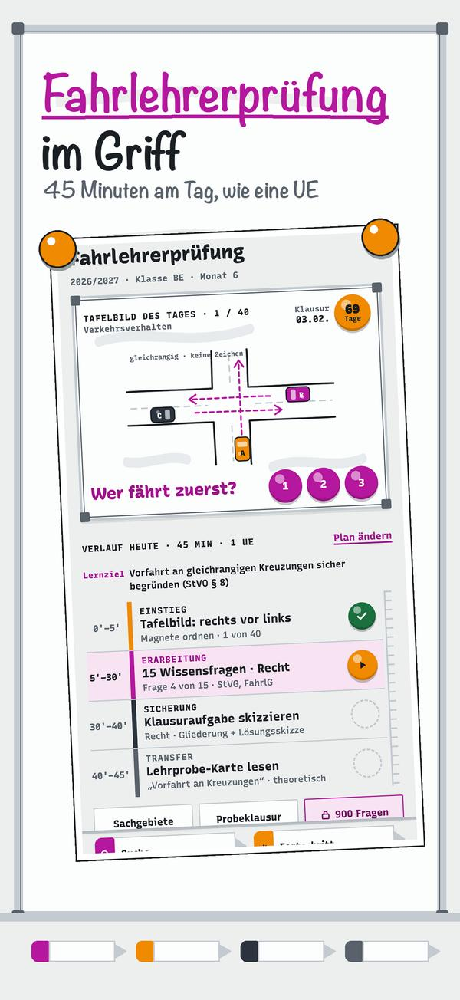
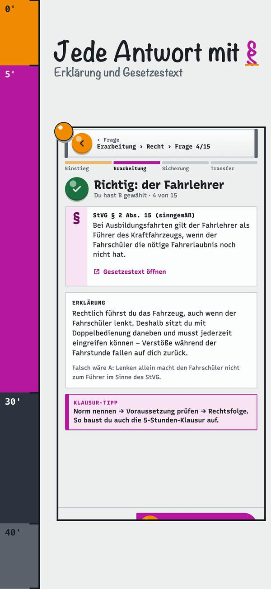
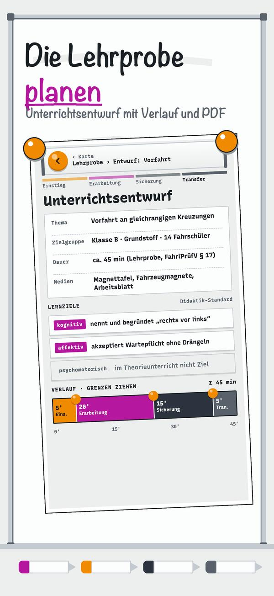

Fahrlehrerprüfung 2026/2027
Fachkunde, Recht & Lehrprobe
Einmalkauf – kein Abo. Fahrlehrerprüfung 2026/2027 begleitet dich durch die Fahrlehrerausbildung Klasse BE: schriftliche und mündliche Fachkundeprüfung und die Lehrproben. Jeder Lerntag ist wie eine Unterrichtseinheit geplant: Tafelbild, Wissensfragen, Klausuraufgabe, Lehrprobe-Karte – 45 Minuten.



- 900 eigene Wissensfragen in 6 Sachgebieten, jede mit Erklärung und §
- 12 Probeklausuren im Aufbau der Prüfung: 5 offene Aufgaben, 5 Stunden
- Lösungsskizze und Bewertungsraster zum Selbstvergleich
- 40 Lehrproben-Karten für theoretischen und fahrpraktischen Unterricht
- Unterrichtsentwurf planen: Lernziele, Verlauf 45 Minuten, PDF
- 60 Prüfungsgespräche für die mündliche Fachkunde
- 40 Tafelbilder: Magnete ziehen, Vorfahrt begründen
- Offline und ohne Konto, Fortschritt per iCloud
Bald im App Store
Hilfe · Datenschutz